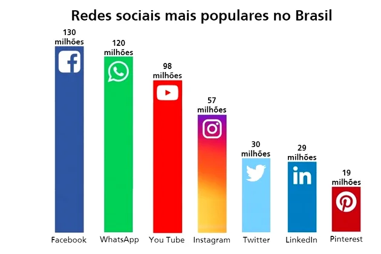

Redes Sociais
As redes sociais são espaços virtuais onde grupos de pessoas ou empresas se relacionam através do envio
de mensagens, da partilha de conteúdos, entre outros.
Atualmente existem diferentes redes sociais, cada uma com um propósito e um público-alvo específico.
Para que servem as redes sociais?
Há vários tipos de redes sociais, cada um com um objetivo diferente e públicos específicos. A grande
diferença entre elas é o seu objetivo, os quais podem ser:
-
Estabelecer contatos pessoais, podendo ser relações de amizade e namoro.
-
Realizar networking, ou seja, compartilhar e buscar conhecimentos profissionais e procurar emprego
ou preencher vagas.
-
Compartilhar e buscar imagens e vídeos.
- Compartilhar e buscar informações sobre temas variados.
- Divulgar produtos e serviços para compra e venda.
Exemplos de redes sociais
| Rede social |
Característica |
| Facebook |
Interação e expansão de contatos. |
| YouTube |
Compartilhamento de vídeos. |
| WhatsApp |
Envio de mensagens instantâneas e chamadas de voz. |
| Instagram |
Compartilhamento de fotos e vídeos. |
| Twitter |
Compartilhamento de pequenas publicações, as quais são conhecidas como “tweets”. |
O uso das redes sociais no Brasil

Utilizar as redes sociais é cada vez mais uma prática entre as pessoas. O Brasil é conhecido por ser um
dos que possui mais usuários em várias redes sociais.
O Facebook é a rede social mais utilizada no Brasil, inclusive por empresas que
aproveitam para realizar
estratégias de publicidade e marketing. Isso acontece devido ao grande alcance de usuários que a rede
apresenta.
O WhatsApp é considerado hoje um dos principais aplicativos destinados à comunicação e
troca de mensagens
e, assim como o Facebook, vem sendo utilizado para interação entre empresa e cliente. No mundo todo esta
rede social já conta mais de 1,2 bilhões de usuários.
O YouTube é uma plataforma de vídeos em que o usuário pode fazer comentários e interagir
com outras
pessoas, por isso também é considerada uma rede social. Tem um alcance muito alto de pessoas, pois
permite assistir vídeos de música, aulas, acompanhar programas e diversas outras atividades.
O Instagram vem se tornando cada vez mais popular no Brasil. Apresentando diferentes
recursos que
permitem interação e diversão aos usuários, esta rede foi citada como a rede preferida pelos usuários.
O Twitter foi uma rede social inovadora que teve um sucesso muito grande. Com o
surgimento de outras
redes sociais, e formato de interação, ele perdeu muitos usuários.
O Linkedin é a maior rede social com foco profissional, onde os usuários podem publicar
informações
relacionadas ao mercado de trabalho, oportunidades de emprego, divulgação de serviços e, principalmente
networking.
O Pinterest é uma rede social que publica conteúdo visual, independente do ramo, podendo
ser de moda,
arte, culinária, arquitetura, dentre outros.
Vantagens e Desvantagens das redes sociais
Existem várias vantagens em fazer parte de redes sociais e é principalmente por isso que elas tiveram um
crescimento tão significativo ao longo do anos. Porém, é importante ficar atento aos perigos que ela
pode oferecer.
Veja no quadro a seguir as principais vantagens e desvantagens das redes sociais.